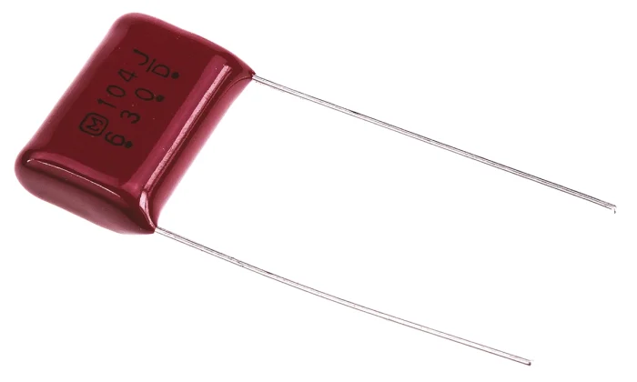
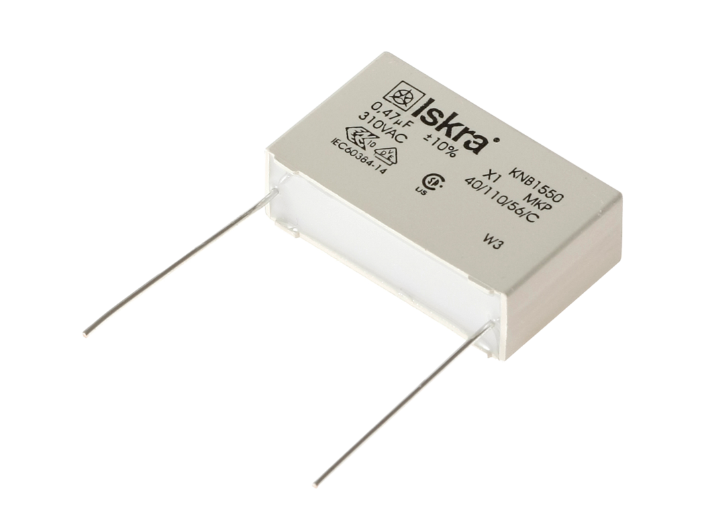
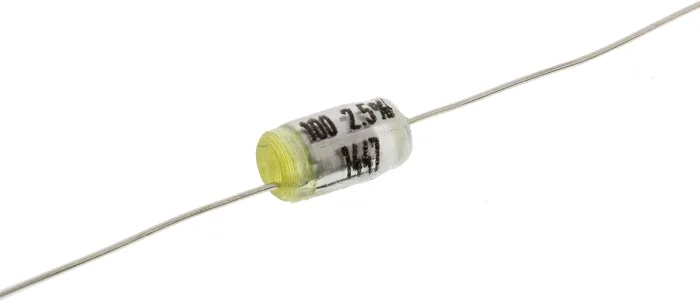
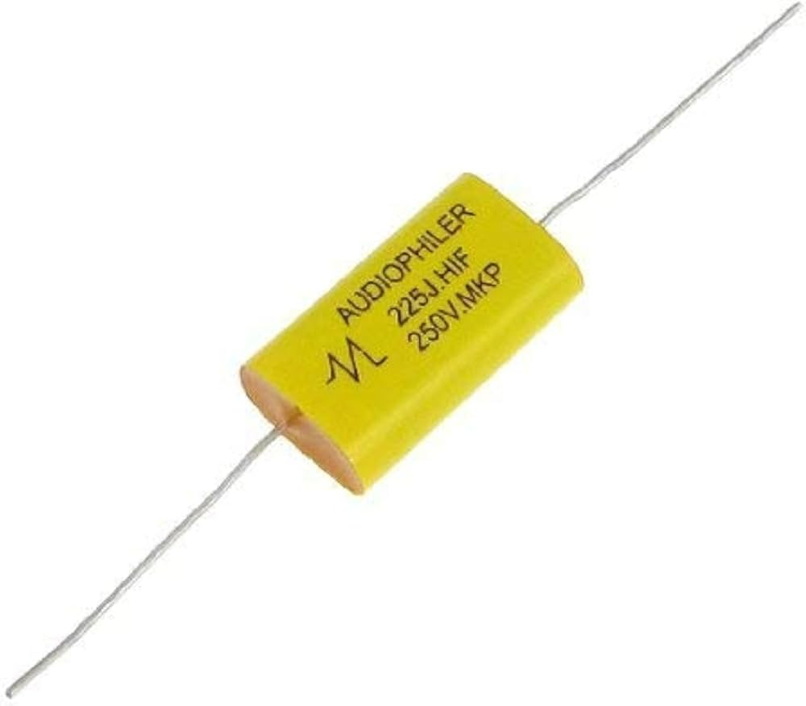
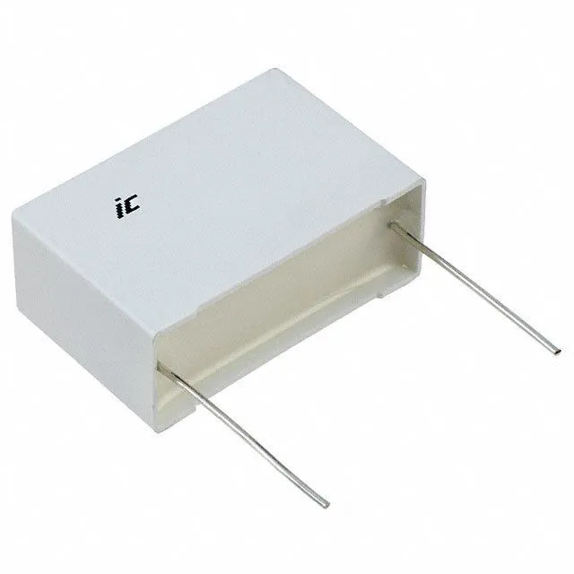

Welcome to ElectroSpecs | Explore Electronics Components | Learn & Build 🚀

POLYESTER FILM CAPACITOR

POLYPROPYLENE FILM CAPACITOR

POLYSTYRENE FILM CAPACITOR

POLYCARBONATE FILM CAPACITOR

PTFE(TEFLON) FILM CAPACITOR